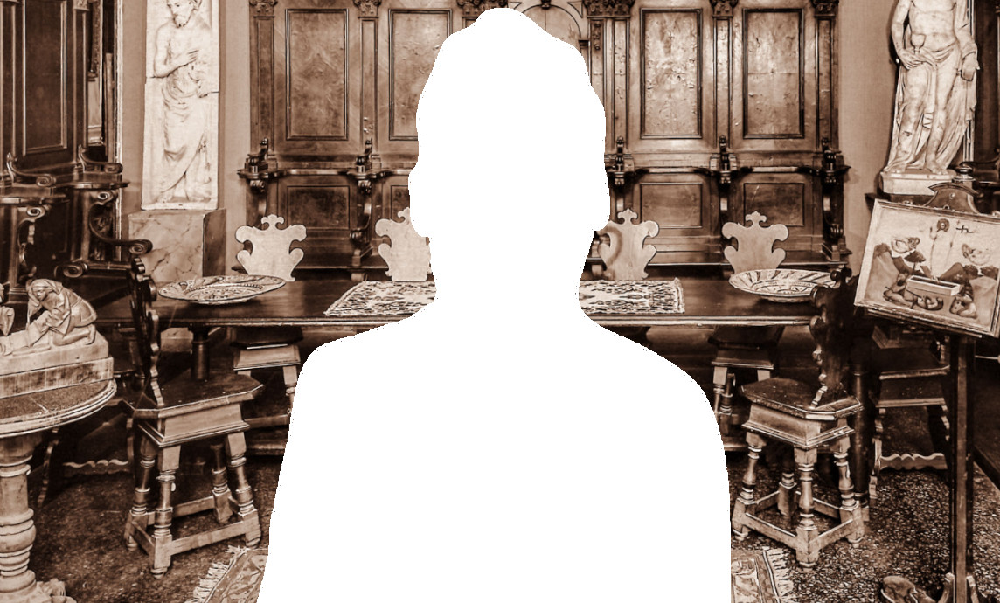

Steffanoni

Consulta le banche dati della Fondazione
Federico Zeri e ricerca fotografie, documenti,
cataloghi d'asta, fondi e notizie
sull'antiquario corrente.
Figlio del restauratore Giuseppe Steffanoni (1841-1902), allievo di Antonio Zanchi e titolare dal 1880 di una propria bottega a Bergamo in cui praticava anche la compravendita delle opere d’arte, Attilio si rivolse più direttamente al mondo del mercato antiquariale iniziando a viaggiare e intessendo una fitta rete di rapporti con colleghi e collezionisti. Si specializzò nei dipinti di alta epoca emiliani, veneti e lombardi, con aperture verso l’Impressionismo francese. Acquisì inoltre la reputazione di fine conoscitore di Giovan Battista Tiepolo, pittore che le cui opere aveva più volte restaurato insieme al padre e al fratello.
Nel corso della vita intrattenne rapporti con i maggiori storici dell’arte del tempo, come documenta l’archivio detenuto dall’ultimo erede, Attilio Steffanoni junior, che include corrispondenza con Roberto Longhi, Ugo Frizzoni, Giuseppe Fiocco, Bernard Berenson, Wart Arslan, e altri antiquari. In particolare, strinse collaborazioni proficue con i colleghi Pietro Accorsi, Paul Cassirer e Benno Geiger. Tramite il mercante Emilio Costantini (1842-1926) entrò in contatto con la cerchia dei più importanti collezionisti fiorentini, tra cui Arthur Acton, proponendo loro – come risulta sempre dalle carte di archivio – opere di Lorenzo Lotto e Bernardino de’ Conti.
Fu anche collezionista e, tra i pittori, predilesse Alessandro Magnasco.